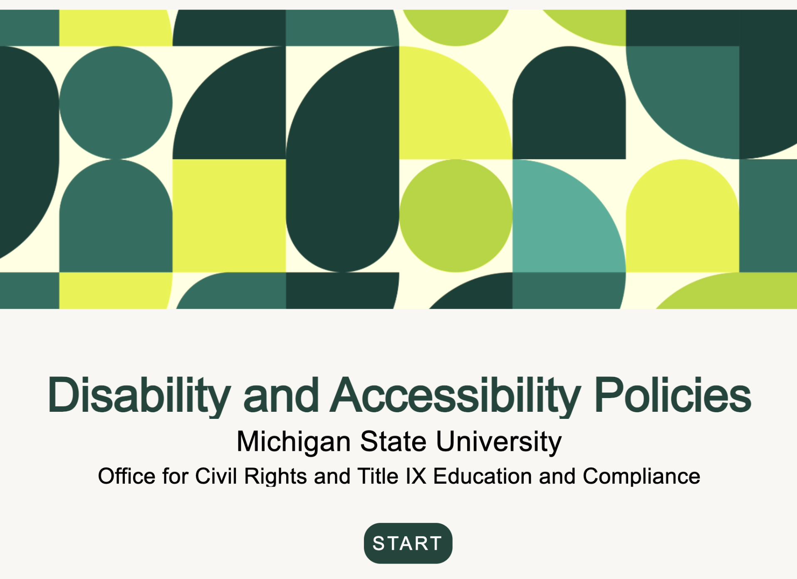

Disability and Accessibility Policies Training
Project Overview
Project Type: Asynchronous Training
Tools Used: Adobe Captivate, Ability LMS, Google Drive, & Google Drawings
My Role: Instructional Designer & Accessibility Specialist
Audience: Faculty and Staff
Status: Launched Fall 2025
Project Description
New federal requirements under ADA Title II mandated that all digital content at public higher education institutions meet WCAG 2.1 accessibility standards. Beyond compliance, there was a recognized gap in faculty and staff awareness of both digital accessibility practices and existing accommodation procedures. The need was identified and championed by the Office for Civil Rights and Title IX Education and Compliance, making this a high-stakes, institution-wide initiative.
The primary audience was all higher education faculty and staff, a broad and mixed-knowledge group. The training was designed assuming little to no prior accessibility knowledge, while remaining relevant to those with more experience. Because the audience included people taking the training independently across different devices, browsers, and assistive technologies, designing for diverse access needs was not just a consideration but a core requirement. Learners ranged from classroom faculty managing student accommodations to supervisors navigating employee accommodation processes, each with distinct roles and responsibilities.
By completing this training, learners are able to:
- Recognize MSU's obligations under federal and state disability laws and the purpose of its accessibility policies.
- Implement student accommodation letters and refer students to appropriate disability resources.
- Navigate the employee accommodation request process and understand associated rights and responsibilities.
- Apply foundational digital accessibility principles to course materials, documents, and digital conten.t
Accessibility was treated as a design requirement from day one, not a final checklist.
Key decisions included:
- Widget Vetting: Before building began, I tested Captivate's interactive components with a screen reader and keyboard to identify which widgets were accessible and which had hard limitations, shaping tool choices for the entire course.
- Keyboard Focus: I identified that Captivate's default keyboard focus indicator was too small and low-contrast for WCAG compliance, so I went into the HTML directly to increase its size and contrast ratio.
- Original Imagery: I created custom graphics for Module 3 using Google Drawings to visually illustrate accessibility concepts including alt text, heading structure, and captions, ensuring the visuals themselves were purposeful and on-topic.
- Multi-Platform Testing: The course was tested across screen readers, keyboard-only navigation, Android and iOS devices, and multiple browsers to verify a consistent, accessible experience.
Challenges & Decisions
The team faced several compounding challenges. Adobe Captivate was a brand-new tool for all three IDs, chosen for budget reasons. It came with a steep learning curve and significant limitations. The platform offered limited customization options, and after testing Captivate's interactive widgets for accessibility early in the project, it became clear that many were not compatible with screen readers or keyboard navigation, with no built-in way to fix them. This narrowed our already limited design options further. On top of that, Captivate proved unstable across the team's devices, with the software eventually crashing for two of the three IDs, requiring us to adapt our entire collaboration workflow mid-project
Each challenge was met with a practical workaround. Early in the project, I documented which Captivate widgets passed accessibility testing and created a working list the team used throughout the build, so we never wasted time on components we knew wouldn't work. When Captivate became unreliable for my teammates, the team shifted to a screen-share model over Microsoft Teams, with one person driving while the others advised, which actually gave everyone visibility into the build process. As the most technical member of the team and the only one whose Captivate remained functional, I took on the majority of the building and editing work. When Captivate's built-in keyboard focus indicator failed to meet WCAG contrast and visibility standards and the platform offered no way to customize it, I located the HTML file inside the SCORM package and wrote CSS code directly to bring it into compliance, a solution that required going well outside the tool's intended workflow.
Our ID team met every other week during the planning and content development phases, increasing to one to two times per week once active building began. Over time the team developed organic roles: one ID handled scheduling and project organization, one served as the lead communicator and primary stakeholder contact, and I functioned as the technical lead and primary builder, though all three of us contributed across areas as needed. SME groups were engaged in separate meetings during the analysis phase, then brought together as a full group to consolidate and prioritize content. Four rounds of revision followed before legal review. When significant disagreements arose that the team couldn't resolve internally, they were escalated to the Office for Civil Rights, the department that commissioned the training, for a final decision, keeping the project moving without stalling on contested content.